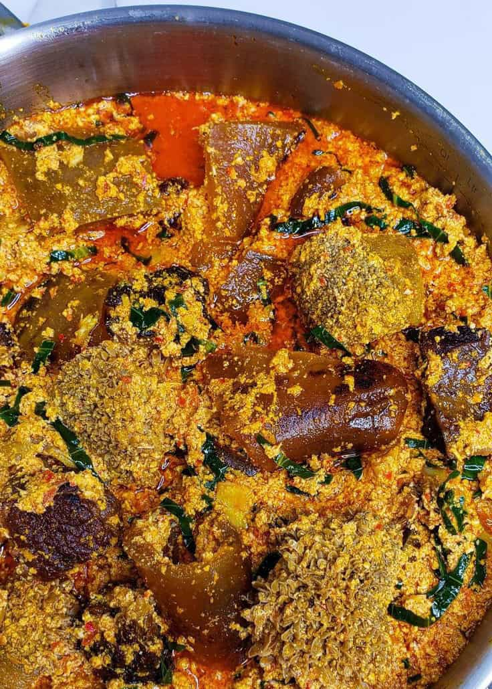

Eguzi soup is one of Nigerians most popular and beloved traditional dishes, made from ground melon seeds that give it a rich, nutty flavor and thick texture. Its typically cooked with palm oil, assorted meats or fish, leafy vegetables like spinash or bitter leaf, and a blend of seasoning such as crayfish, pepper, and onions. The results is a hearty, savory soup that pairs perfectly with swallow foods like pounded yam, eba, or fufu.
Beyond its delicious taste, Eguzi soup holds cultural significance across many Nigerian tribes, especially among the yoruba, Igbo, and Edo people, each with their own unique way of preparing it. Whether cooked with lumps, fried, or thickened with vegetables, Eguzi is more than just a meal- it is a symbol of comfort, celebration, and home.